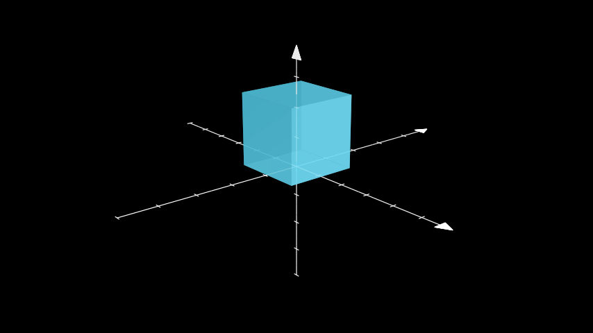
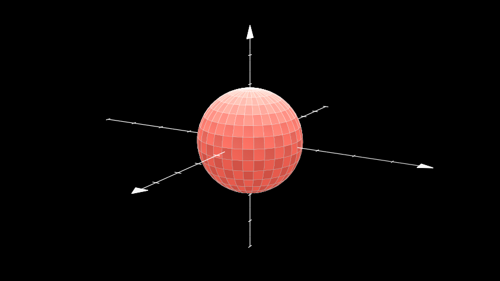
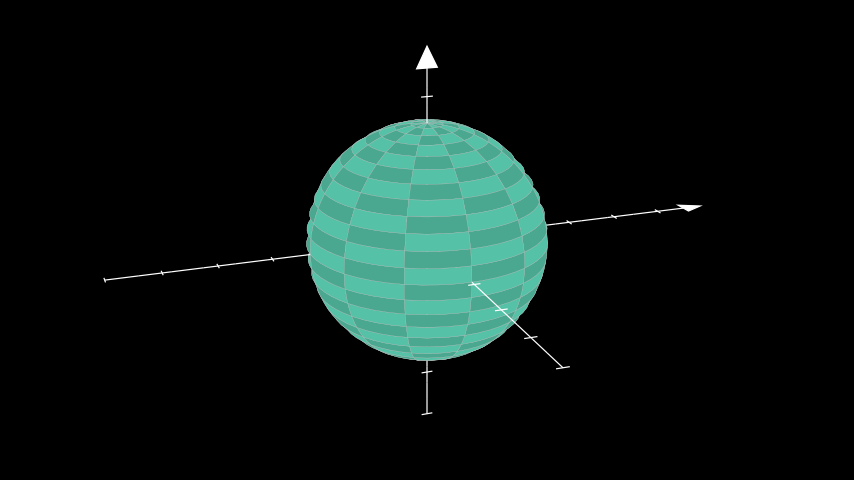
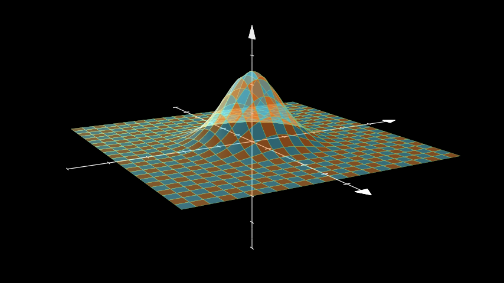
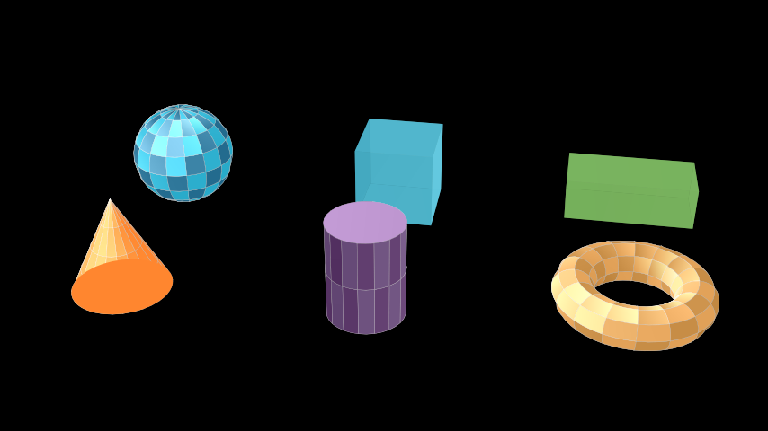
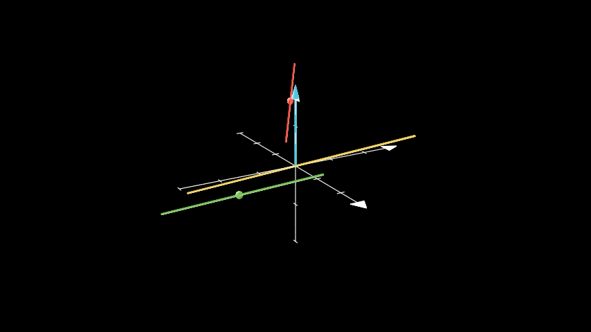
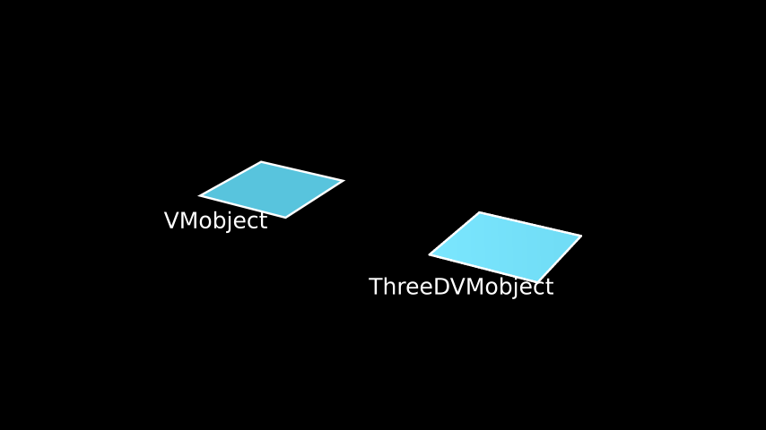
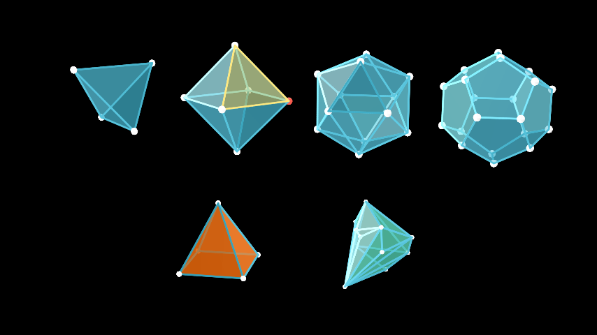
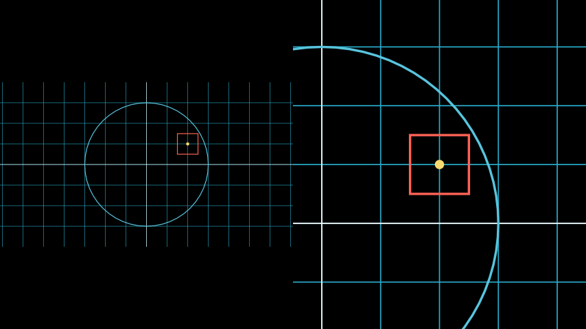
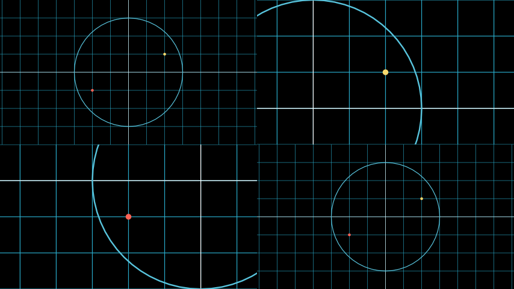

Every scene looks at its mobjects through a camera. The camera decides which part of the plane is visible, how big the picture is, and, in 3D, from which direction you look. You rarely create a camera yourself: you pick a scene class, and the scene creates the matching camera.
| Scene class | Camera class | What it adds |
|---|---|---|
Scene |
CameraClass |
A fixed view of the frame. |
MovingCameraScene |
MovingCameraClass |
A frame you can move, scale and animate: panning and zooming. |
ZoomedScene |
MultiCameraClass |
A second camera whose view is shown in a “zoomed display” inset. |
ThreeDScene, SpecialThreeDScene
|
ThreeDCameraClass |
Spherical camera angles, perspective, depth sorting and shading. |
VectorScene,
LinearTransformationScene
|
CameraClass |
Helpers for vectors and matrix transformations. |
any scene with camera_class = ...
|
MappingCameraClass,
SplitScreenCameraClass,
OldMultiCameraClass
|
Warped views and several views side by side. |
Inside construct() the camera is
self$camera. (Python manim code often writes
self.renderer.camera; self$camera is the same
object, and self$renderer$camera works too.)
Because 3D views need the camera of a ThreeDScene, every
example in this vignette is a scene. The plot() method
draws with a plain 2D camera, which ignores depth: it is handy for 2D
pictures but shows a 3D mobject from straight above. To look at a 3D
scene from the console, plot one of its frames:
plot(scene_frame(MyScene, t = 2)) draws the frame at two
seconds with the scene’s own camera (see RStudio, knitr, Quarto and Shiny).
Scenes without motion use the chunk option
save_last_frame = TRUE, so they appear as pictures even
where the other scenes play as videos.
Camera settings for any scene
The size of the picture and of the visible region are configuration
settings. Set them for the session with manim_config(), for
one render with render(), or for the chunks of a document
with knitr::opts_chunk$set():
manim_config(background_color = "#1C1C2E") # every scene from now on
render(MyScene, quality = "m", background_color = WHITE, frame_rate = 24)
render(MyScene, pixel_width = 1080, pixel_height = 1080) # a square video| Setting | Meaning |
|---|---|
background_color, background_opacity
|
The color behind the mobjects (transparent = TRUE
renders without one). |
pixel_width, pixel_height,
frame_rate
|
The video size and frame rate; quality sets all three
at once. |
frame_width |
The visible width in scene units, 14.22 at every quality; the camera derives the height from the pixel aspect ratio (8 at 16:9, 14.22 for a square video). |
The same values can be given to the camera of a single scene class by
overriding initialize(): arguments that the scene does not
use itself are passed to its camera. This is also the way to set a
background_image, a PNG file or an array of values from 0
to 1 that replaces the background color (drawn pixel for pixel from the
top left corner, as in manim):
BackgroundImage <- R6::R6Class("BackgroundImage", inherit = Scene,
public = list(
initialize = function(...) {
h <- config$pixel_height
w <- config$pixel_width
shade <- matrix(seq(0.35, 0, length.out = h), h, w)
sky <- array(c(shade * 0.4, shade * 0.6, shade + 0.15), c(h, w, 3))
super$initialize(background_image = sky, ...)
},
construct = function() {
moon <- Circle(radius = 1, color = YELLOW_A)$set_fill(YELLOW_A, opacity = 1)$shift(3 * RIGHT + 1.5 * UP)
set.seed(4)
stars <- VGroup(lapply(1:40, function(i) Dot(c(runif(1, -7, 7), runif(1, -4, 4), 0), radius = 0.025)))
self$add(stars)
self$play(FadeIn(moon, shift = DOWN), run_time = 1.5)
}
)
)Inside construct(),
self$camera$set_background(pixel_array) and
self$camera$set_background_from_func(f) replace the
background with an image computed in R. f receives the
coordinates c(x, y) of a pixel and returns its color as
c(red, green, blue, alpha) between 0 and 1; it is called
once per pixel, so it takes a moment at high quality.
RadialBackground <- R6::R6Class("RadialBackground", inherit = Scene,
public = list(construct = function() {
self$camera$set_background_from_func(function(xy) {
r <- min(sqrt(sum(xy^2)) / 8, 1)
c(0.15 * (1 - r), 0.1 + 0.25 * (1 - r), 0.05 + 0.35 * (1 - r), 1)
})
square <- Square(side_length = 3, color = WHITE)$set_fill(ORANGE, opacity = 0.8)
self$play(DrawBorderThenFill(square), run_time = 1.5)
})
)Moving the camera in 2D
A MovingCameraScene has a MovingCameraClass
camera whose visible region is a rectangle mobject,
self$camera$frame. Moving, scaling or animating the frame
pans and zooms; everything else in the scene stays where it is. The
frame is an ordinary mobject, so save_state() and
Restore() work on it.
ZoomInOut <- R6::R6Class("ZoomInOut", inherit = MovingCameraScene,
public = list(construct = function() {
square <- Square(side_length = 3, color = BLUE)$set_fill(BLUE, opacity = 0.3)
dot <- Dot(square$get_corner(UR), color = YELLOW)
self$add(square, dot)
self$camera$frame$save_state()
self$play(self$camera$frame$animate$scale(0.4)$move_to(dot), run_time = 1.5)
self$play(dot$animate$shift(0.5 * LEFT), run_time = 0.8)
self$play(Restore(self$camera$frame), run_time = 1.5)
})
)self$camera$frame$animate$set(width = 4) sets the
visible width directly, and the camera methods
get_frame_width(), get_frame_height(),
get_frame_center(), set_frame_width(),
set_frame_height() and set_frame_center() read
or change the frame without animation. is_in_frame(mob)
tells whether a mobject is at least partly visible.
Following a mobject
An updater on the frame makes the camera follow a moving mobject. This is upstream’s classic example: the camera zooms in on a dot, rides along the graph with it, and zooms out again.
FollowingGraphCamera <- R6::R6Class("FollowingGraphCamera", inherit = MovingCameraScene,
public = list(construct = function() {
self$camera$frame$save_state()
ax <- Axes(x_range = c(-1, 10), y_range = c(-1, 10))
graph <- ax$plot(function(x) sin(x), color = BLUE, x_range = c(0, 3 * PI))
moving_dot <- Dot(ax$i2gp(graph$t_min, graph), color = ORANGE)
dot_1 <- Dot(ax$i2gp(graph$t_min, graph))
dot_2 <- Dot(ax$i2gp(graph$t_max, graph))
self$add(ax, graph, dot_1, dot_2, moving_dot)
self$play(self$camera$frame$animate$scale(0.5)$move_to(moving_dot), run_time = 1)
follow <- function(mob) mob$move_to(moving_dot$get_center())
self$camera$frame$add_updater(follow)
self$play(MoveAlongPath(moving_dot, graph, rate_func = linear), run_time = 2)
self$camera$frame$remove_updater(follow)
self$play(Restore(self$camera$frame), run_time = 1)
})
)Fitting the view to mobjects
self$camera$auto_zoom(mobjects, margin) returns an
animation that moves and scales the frame so the mobjects just fit, plus
margin. With animate = FALSE it moves the
frame at once instead, and only_mobjects_in_frame = TRUE
ignores mobjects that are off screen.
AutoZoom <- R6::R6Class("AutoZoom", inherit = MovingCameraScene,
public = list(construct = function() {
small <- VGroup(Square(side_length = 0.6, color = RED), Circle(radius = 0.3, color = YELLOW))
small$arrange(RIGHT, buff = 0.3)$shift(4 * LEFT + 2 * DOWN)
big <- Star(color = BLUE)$scale(1.5)$shift(3 * RIGHT + UP)
self$add(small, big)
self$play(self$camera$auto_zoom(small, margin = 0.5), run_time = 1.5)
self$play(self$camera$auto_zoom(list(small, big), margin = 1), run_time = 1.5)
})
)Zoomed scenes
A ZoomedScene adds a second camera,
self$zoomed_camera, whose view is shown in an inset,
self$zoomed_display. The zoomed camera’s frame (a rectangle
in the scene) marks what is magnified. activate_zooming()
turns both on (with animate = TRUE it also plays the zoom
in and pop out animations);
get_zoomed_display_pop_out_animation() animates the display
growing out of the frame.
The settings are arguments of the scene’s initialize(),
so a scene that wants other values overrides it:
zoom_factor (size of the zoomed frame relative to the
display, 0.15 by default), zoomed_display_height,
zoomed_display_width, zoomed_display_center or
zoomed_display_corner,
zoomed_display_corner_buff,
image_frame_stroke_width,
zoomed_camera_frame_starting_position,
zoomed_camera_config (arguments of the zoomed
MovingCameraClass) and
zoomed_camera_image_mobject_config.
This is a shortened version of upstream’s
MovingZoomedSceneAround:
MovingZoomedSceneAround <- R6::R6Class("MovingZoomedSceneAround", inherit = ZoomedScene,
public = list(
initialize = function(...) {
super$initialize(zoom_factor = 0.3, zoomed_display_height = 1, zoomed_display_width = 6,
image_frame_stroke_width = 20,
zoomed_camera_config = list(default_frame_stroke_width = 3), ...)
},
construct = function() {
dot <- Dot()$shift(UL * 2)
image <- ImageMobject(matrix(c(0, 100, 30, 200, 255, 0, 5, 33), 2, byrow = TRUE))
image$height <- 7
frame_text <- Text("Frame", color = PURPLE, font_size = 67)
zoomed_camera_text <- Text("Zoomed camera", color = RED, font_size = 67)
self$add(image, dot)
frame <- self$zoomed_camera$frame
zoomed_display <- self$zoomed_display
zoomed_display_frame <- zoomed_display$display_frame
frame$move_to(dot)
frame$set_color(PURPLE)
zoomed_display_frame$set_color(RED)
zoomed_display$shift(DOWN)
zd_rect <- BackgroundRectangle(zoomed_display, fill_opacity = 0, buff = MED_SMALL_BUFF)
self$add_foreground_mobject(zd_rect)
unfold_camera <- UpdateFromFunc(zd_rect, function(rect) rect$replace(zoomed_display))
frame_text$next_to(frame, DOWN)
self$play(Create(frame), FadeIn(frame_text, shift = UP), run_time = 1)
self$activate_zooming()
self$play(self$get_zoomed_display_pop_out_animation(), unfold_camera, run_time = 1)
zoomed_camera_text$next_to(zoomed_display_frame, DOWN)
self$play(FadeIn(zoomed_camera_text, shift = UP), FadeOut(frame_text), run_time = 0.8)
self$play(frame$animate$shift(2.5 * DOWN), FadeOut(zoomed_camera_text), run_time = 1.5)
}
)
)get_zoom_factor() returns the current magnification
ratio and get_zoom_in_animation() the animation that
activate_zooming(animate = TRUE) plays first.
The zoomed display is an ImageMobjectFromCamera(), drawn
by the scene’s MultiCameraClass camera. You can build the
same picture in picture by hand in any MovingCameraScene
that uses a MultiCameraClass camera:
PictureInPicture <- R6::R6Class("PictureInPicture", inherit = MovingCameraScene,
public = list(
default_camera_class = function() MultiCameraClass,
construct = function() {
grid <- NumberPlane()
target <- Star(color = YELLOW)$scale(0.4)$shift(2 * LEFT + DOWN)
self$add(grid, target)
inset_camera <- MovingCameraClass$new(default_frame_stroke_width = 3)
inset_camera$frame$set(height = 2)$move_to(target)
inset <- ImageMobjectFromCamera(inset_camera)
inset$add_display_frame()
inset$set(height = 3)$to_corner(UR)
self$camera$add_image_mobject_from_camera(inset)
self$add(inset_camera$frame, inset)
self$play(Rotate(target, angle = PI), run_time = 1.5)
}
)
)MultiCameraClass$new(image_mobjects_from_cameras, allow_cameras_to_capture_their_own_display)
is the camera; add_image_mobject_from_camera() registers
more displays later.
3D scenes
A ThreeDScene looks at the scene from a point on a
sphere around the frame center:
-
phiis the polar angle, measured from the z axis:phi = 0looks straight down (the default, so a 3D scene starts out looking like a 2D one),phi = 90 * DEGREESlooks horizontally; -
thetais the azimuth, the angle around the z axis (-90 * DEGREESby default, which puts the x axis horizontal); -
gammarolls the camera about its line of sight; -
zoommagnifies the picture; -
focal_distancesets the strength of the perspective (smaller is stronger); -
frame_centeris the 3D point at the center of the screen.
set_camera_orientation() sets any of them at once.
Angles are in radians; multiply degrees by DEGREES.
CameraOrientation <- R6::R6Class("CameraOrientation", inherit = ThreeDScene,
public = list(construct = function() {
axes <- ThreeDAxes()
cube <- Cube(side_length = 2, fill_color = BLUE)$shift(OUT)
self$set_camera_orientation(phi = 70 * DEGREES, theta = -40 * DEGREES, zoom = 0.9)
self$add(axes, cube)
})
)
Text that ignores the camera
Titles and labels usually should not be rotated with the scene.
add_fixed_in_frame_mobjects() pins mobjects to the screen,
as if they were drawn on the camera lens.
add_fixed_orientation_mobjects() keeps mobjects facing the
viewer while their position follows the 3D scene, which suits axis
labels. remove_fixed_in_frame_mobjects() and
remove_fixed_orientation_mobjects() undo them.
FixedInFrameMObjectTest <- R6::R6Class("FixedInFrameMObjectTest", inherit = ThreeDScene,
public = list(construct = function() {
axes <- ThreeDAxes()
self$set_camera_orientation(phi = 75 * DEGREES, theta = -45 * DEGREES)
text3d <- Text("This is a 3D text")
self$add_fixed_in_frame_mobjects(text3d)
text3d$to_corner(UL)
x_label <- Text("x", color = YELLOW)$move_to(axes$c2p(6.6, 0, 0))
z_label <- Text("z", color = YELLOW)$move_to(axes$c2p(0.6, 0, 3.6))
self$add_fixed_orientation_mobjects(x_label, z_label)
self$add(axes)
self$begin_ambient_camera_rotation(rate = 0.4)
self$wait(1.5)
})
)Moving the camera
move_camera() animates the camera to new angles (any of
phi, theta, gamma,
zoom, focal_distance and
frame_center), together with any animations in
added_anims.
begin_ambient_camera_rotation(rate, about) keeps turning
the camera (about "theta", "phi" or
"gamma") until stop_ambient_camera_rotation().
This is upstream’s ThreeDCameraRotation:
ThreeDCameraRotation <- R6::R6Class("ThreeDCameraRotation", inherit = ThreeDScene,
public = list(construct = function() {
axes <- ThreeDAxes()
circle <- Circle()
self$set_camera_orientation(phi = 75 * DEGREES, theta = 30 * DEGREES)
self$add(circle, axes)
self$begin_ambient_camera_rotation(rate = 0.5)
self$wait(1.5)
self$stop_ambient_camera_rotation()
self$move_camera(phi = 60 * DEGREES, theta = -60 * DEGREES, gamma = 10 * DEGREES, zoom = 1.3,
run_time = 1.5)
})
)begin_3dillusion_camera_rotation(rate) wobbles the
camera on a small ellipse instead, which gives a sense of depth without
turning the scene away; stop_3dillusion_camera_rotation()
ends it.
ThreeDCameraIllusionRotation <- R6::R6Class("ThreeDCameraIllusionRotation", inherit = ThreeDScene,
public = list(construct = function() {
axes <- ThreeDAxes()
circle <- Circle()
self$set_camera_orientation(phi = 75 * DEGREES, theta = 30 * DEGREES)
self$add(circle, axes)
self$begin_3dillusion_camera_rotation(rate = 2)
self$wait(PI / 2)
self$stop_3dillusion_camera_rotation()
})
)The angles live in value trackers on the camera
(phi_tracker, theta_tracker,
gamma_tracker, zoom_tracker,
focal_distance_tracker), read with get_phi(),
get_theta(), get_gamma(),
get_zoom() and get_focal_distance() and set
without animation with set_phi(), set_theta(),
set_gamma(), set_zoom() and
set_focal_distance(); the scene’s
camera_tracker("theta") returns one of the trackers.
project_point(p) gives the screen position of a 3D point
under the current view. Animating a tracker yourself, for example
self$play(self$camera$theta_tracker$animate$set_value(PI)),
is the same as move_camera().
Light and shading
Mobjects with shade_in_3d = TRUE (all surfaces and the
faces of solids) are sorted by depth and shaded by how much they face
the light source, self$camera$light_source, a point you can
move. This is upstream’s ThreeDLightSourcePosition, lit
from below:
ThreeDLightSourcePosition <- R6::R6Class("ThreeDLightSourcePosition", inherit = ThreeDScene,
public = list(construct = function() {
axes <- ThreeDAxes()
sphere <- Surface(
function(u, v) c(1.5 * cos(u) * cos(v), 1.5 * cos(u) * sin(v), 1.5 * sin(u)),
v_range = c(0, TAU), u_range = c(-PI / 2, PI / 2),
checkerboard_colors = c(RED_D, RED_E), resolution = c(15, 32)
)
self$camera$light_source$move_to(3 * IN)
self$set_camera_orientation(phi = 75 * DEGREES, theta = 30 * DEGREES)
self$add(axes, sphere)
})
)
The shading itself is get_shaded_rgb(): a color
brightens when its surface faces the light and darkens when it faces
away.
blue <- c(0.2, 0.4, 0.8)
get_shaded_rgb(blue, point = ORIGIN, unit_normal_vect = OUT, light_source = 10 * OUT)
#> [1] 0.7 0.9 1.3
get_shaded_rgb(blue, point = ORIGIN, unit_normal_vect = IN, light_source = 10 * OUT)
#> [1] -0.05 0.15 0.55Arguments of initialize() are passed to the
ThreeDCameraClass camera:
should_apply_shading = FALSE turns shading off,
light_source_start_point moves the light,
exponential_projection = TRUE uses a softer perspective,
and phi, theta, gamma,
zoom, focal_distance and
frame_center set the starting view.
Default angles and SpecialThreeDScene
set_to_default_angled_camera_orientation() sets the
angles stored in the scene’s
default_angled_camera_orientation_kwargs (phi
70 and theta -135 degrees). SpecialThreeDScene
adds ready made pieces: get_axes(),
get_sphere() (a radius 2 sphere, coarser at low quality),
get_default_camera_position() and
set_camera_to_default_position(). Its
initialize() takes camera_config,
three_d_axes_config, sphere_config,
default_angled_camera_position and
low_quality_config.
SpecialScene <- R6::R6Class("SpecialScene", inherit = SpecialThreeDScene,
public = list(construct = function() {
self$set_camera_to_default_position()
self$add(self$get_axes(), self$get_sphere(checkerboard_colors = c(TEAL_D, TEAL_E)))
})
)
Surfaces and 3D plots
Surface(func, u_range, v_range, resolution) draws a
parametric surface: func(u, v) returns a point
c(x, y, z). The surface is made of resolution
(one number or c(u, v)) small faces colored alternately
with checkerboard_colors; fill_color,
fill_opacity, stroke_color and
stroke_width style them.
set_fill_by_checkerboard() recolors the faces afterwards.
This is upstream’s Gaussian surface:
ThreeDSurfacePlot <- R6::R6Class("ThreeDSurfacePlot", inherit = ThreeDScene,
public = list(construct = function() {
self$set_camera_orientation(phi = 75 * DEGREES, theta = -30 * DEGREES)
param_gauss <- function(u, v) {
sigma <- 0.4
c(u, v, exp(-(u^2 + v^2) / (2 * sigma^2)))
}
gauss_plane <- Surface(param_gauss, resolution = c(24, 24), v_range = c(-2, 2), u_range = c(-2, 2))
gauss_plane$scale(2, about_point = ORIGIN)
gauss_plane$set_style(fill_opacity = 1, stroke_color = GREEN)
gauss_plane$set_fill_by_checkerboard(ORANGE, BLUE, opacity = 0.5)
axes <- ThreeDAxes()
self$add(axes, gauss_plane)
})
)
ThreeDAxes() has the methods of Axes (see
Graphs, plots and coordinate systems) plus a
z axis (z_range, z_length,
z_axis_config).
axes$plot_surface(f, u_range, v_range) draws
z = f(x, y) in the axes’ coordinates, and its
colorscale argument colors the faces by height (for example
colorscale = c(BLUE, TEAL, YELLOW, RED)).
set_fill_by_value(axes, colorscale, axis) does the same for
any surface; axis is 1, 2 or 3 for x, y or z, and
colorscale is a vector of colors spread over the axis
range, or a list of list(color, value) pairs.
get_axis_labels() of ThreeDAxes also labels
the z axis.
SurfacePlot <- R6::R6Class("SurfacePlot", inherit = ThreeDScene,
public = list(construct = function() {
axes <- ThreeDAxes(x_range = c(-3, 3, 1), y_range = c(-3, 3, 1), z_range = c(-1, 1, 0.5),
x_length = 6, y_length = 6, z_length = 3)
wave <- axes$plot_surface(function(x, y) sin(x) * cos(y), u_range = c(-3, 3), v_range = c(-3, 3),
resolution = c(18, 18), fill_opacity = 0.9)
wave$set_fill_by_value(axes = axes, axis = 3,
colorscale = list(list(BLUE, -1), list(TEAL, -0.3), list(YELLOW, 0.3), list(RED, 1)))
self$set_camera_orientation(phi = 65 * DEGREES, theta = -50 * DEGREES, zoom = 0.9)
self$add(axes, wave)
self$begin_ambient_camera_rotation(rate = 0.3)
self$wait(1.5)
})
)3D mobjects
All of these are mobjects like any other: they move, rotate, scale
and animate. Each has an R6 class generator with the suffix
Class (SurfaceClass, SphereClass,
Dot3DClass, CubeClass,
PrismClass, ConeClass,
CylinderClass, Line3DClass,
Arrow3DClass, TorusClass,
ThreeDVMobjectClass, PolyhedronClass) for
subclassing, and the help pages are ?three_dimensions and
?polyhedra. The curved ones are Surfaces, so
they accept resolution, checkerboard_colors
and the surface style arguments; lower resolutions draw faster.
| Constructor | Main arguments |
|---|---|
Sphere() |
center, radius, resolution,
u_range, v_range (partial spheres) |
Dot3D() |
point, radius, color
|
Cube() |
side_length, fill_color,
fill_opacity, stroke_width
|
Prism() |
dimensions = c(x, y, z) |
Cone() |
base_radius, height,
direction, show_base
|
Cylinder() |
radius, height, direction,
show_ends
|
Torus() |
major_radius, minor_radius
|
Line3D() |
start, end, thickness,
color
|
Arrow3D() |
start, end, thickness,
height and base_radius of the tip |
ThreeDVMobject() |
any VMobject arguments; shaded in 3D |
Solids <- R6::R6Class("Solids", inherit = ThreeDScene,
public = list(construct = function() {
self$set_camera_orientation(phi = 60 * DEGREES, theta = -80 * DEGREES)
sphere <- Sphere(radius = 1, resolution = c(16, 8))$move_to(c(-4.5, 1.8, 0))
cube <- Cube(side_length = 1.5, fill_color = BLUE)$move_to(c(0, 1.8, 0))
prism <- Prism(dimensions = c(2.4, 1.2, 0.8), fill_color = GREEN)$move_to(c(4.5, 1.8, 0))
cone <- Cone(base_radius = 0.9, height = 1.8, show_base = TRUE, resolution = c(4, 16),
fill_color = ORANGE)$move_to(c(-4.5, -1.8, 0))
cylinder <- Cylinder(radius = 0.7, height = 1.8, resolution = c(2, 16), fill_color = PURPLE,
checkerboard_colors = c(PURPLE_D, PURPLE_E))$
move_to(c(0, -1.8, 0))
torus <- Torus(major_radius = 1, minor_radius = 0.35, resolution = c(16, 8),
checkerboard_colors = c(GOLD_D, GOLD_E))$move_to(c(4.5, -1.8, 0))
self$add(sphere, cube, prism, cone, cylinder, torus)
})
)
Lines and arrows are thin cylinders.
Line3D_parallel_to(line, point, length) and
Line3D_perpendicular_to(line, point, length) (upstream’s
class methods Line3D.parallel_to() and
Line3D.perpendicular_to()) make a new line through
point. Dot3D() is a small sphere that marks a
point.
Lines3D <- R6::R6Class("Lines3D", inherit = ThreeDScene,
public = list(construct = function() {
self$set_camera_orientation(phi = 70 * DEGREES, theta = -30 * DEGREES)
axes <- ThreeDAxes(x_range = c(-3, 3, 1), y_range = c(-3, 3, 1), z_range = c(-2, 2, 1),
x_length = 6, y_length = 6, z_length = 4)
line <- Line3D(start = c(-2, -2, -1), end = c(2, 2, 1), color = YELLOW, resolution = 8)
parallel <- Line3D_parallel_to(line, point = c(1, -2, 0), length = 4, color = GREEN, resolution = 8)
perpendicular <- Line3D_perpendicular_to(line, point = c(-2, 1, 1), length = 3, color = RED,
resolution = 8)
arrow <- Arrow3D(start = ORIGIN, end = c(0, 0, 2), color = BLUE, resolution = 8)
dots <- VGroup(Dot3D(c(1, -2, 0), color = GREEN), Dot3D(c(-2, 1, 1), color = RED))
self$add(axes, line, parallel, perpendicular, arrow, dots)
})
)
ThreeDVMobject() is a VMobject with
shade_in_3d = TRUE: give it points and it is depth sorted
and shaded like the faces of a solid. Any VMobject can be
made 3D with set_shade_in_3d(TRUE).
ShadedFace <- R6::R6Class("ShadedFace", inherit = ThreeDScene,
public = list(construct = function() {
self$set_camera_orientation(phi = 65 * DEGREES, theta = -60 * DEGREES)
corners <- rbind(c(-1, -1, 0), c(1, -1, 0), c(1, 1, 0), c(-1, 1, 0), c(-1, -1, 0))
flat <- VMobject(fill_color = BLUE, fill_opacity = 1)$set_points_as_corners(corners)$shift(2.5 * LEFT)
shaded <- ThreeDVMobject(fill_color = BLUE, fill_opacity = 1)$set_points_as_corners(corners)$
shift(2.5 * RIGHT)
self$add(flat, shaded)
self$add_fixed_orientation_mobjects(
Text("VMobject", font_size = 30)$move_to(flat$get_center() + 1.8 * DOWN),
Text("ThreeDVMobject", font_size = 30)$move_to(shaded$get_center() + 1.8 * DOWN)
)
})
)
Polyhedra
Tetrahedron(), Octahedron(),
Icosahedron() and Dodecahedron() are the
platonic solids, sized by edge_length.
Polyhedron(vertex_coords, faces_list) builds any polyhedron
from a matrix of vertices and a list of faces (1 based vertex indices,
as in the OFF file format), and ConvexHull3D(points) wraps
a cloud of points. The faces are in $faces and the vertices
and edges in $graph, a Graph(); style them
with faces_config and graph_config, or
afterwards through those fields.
Each vertex is a small Dot3D() sphere. A scene with many
vertices draws faster with coarser ones, set through
graph_config:
PolyhedraGallery <- R6::R6Class("PolyhedraGallery", inherit = ThreeDScene,
public = list(construct = function() {
self$set_camera_orientation(phi = 75 * DEGREES, theta = -80 * DEGREES)
coarse <- list(vertex_config = list(resolution = c(4, 4)))
solids <- list(
Tetrahedron(edge_length = 2, graph_config = coarse),
Octahedron(edge_length = 1.8, graph_config = coarse),
Icosahedron(edge_length = 1.3, graph_config = coarse),
Dodecahedron(edge_length = 0.9, graph_config = coarse)
)
xs <- c(-4.5, -1.5, 1.5, 4.5)
for (k in seq_along(solids)) solids[[k]]$move_to(c(xs[k], 0, 1.6))
solids[[2]]$faces[3]$set_color(YELLOW)
solids[[2]]$graph[1]$set_color(RED)
pyramid <- Polyhedron(
rbind(c(1, 1, 0), c(1, -1, 0), c(-1, -1, 0), c(-1, 1, 0), c(0, 0, 2)),
list(c(1, 2, 5), c(2, 3, 5), c(3, 4, 5), c(4, 1, 5), c(1, 2, 3, 4)),
faces_config = list(fill_color = ORANGE, fill_opacity = 0.7), graph_config = coarse
)$scale(0.8)$move_to(c(-2, 0, -1.8))
set.seed(3)
cloud <- matrix(rnorm(45), ncol = 3)
hull <- ConvexHull3D(cloud, faces_config = list(fill_color = TEAL, fill_opacity = 0.6),
graph_config = coarse)$scale(0.6)$move_to(c(2, 0, -1.8))
self$add(VGroup(solids), pyramid, hull)
})
)
Linear algebra: VectorScene and
LinearTransformationScene
LinearTransformationScene sets up a gray background
plane, a blue plane on top of it that gets transformed, and the basis
vectors i hat (green) and j hat (red). Mobjects added with
add_transformable_mobject(), add_vector() or
add_unit_square() move with every transformation;
add_background_mobject() and
add_foreground_mobject() add mobjects that stay put.
Then:
-
apply_matrix(m)animates the linear mapm(a 2 x 2 R matrix, somatrix(c(1, 0, 1, 1), 2)is the shear with columns (1, 0) and (1, 1)); -
apply_transposed_matrix(t_m)takes the matrix by rows, as 3Blue1Brown’s old code did;apply_inverse()andapply_inverse_transpose()undo a map; -
apply_nonlinear_transformation(f)andapply_function(f)animate any function of points.
Each of these takes run_time (3 seconds by default) and
added_anims. Options of the scene go to
initialize(): show_basis_vectors,
show_coordinates, leave_ghost_vectors (keep
faded copies of the vectors after each step),
include_background_plane,
include_foreground_plane,
background_plane_kwargs,
foreground_plane_kwargs, i_hat_color,
j_hat_color and basis_vector_stroke_width.
Shear <- R6::R6Class("Shear", inherit = LinearTransformationScene,
public = list(
initialize = function(...) super$initialize(leave_ghost_vectors = TRUE, ...),
construct = function() {
self$add_unit_square()
self$add_vector(c(-1, 2), color = YELLOW)
self$add_transformable_mobject(Circle(radius = 0.5, color = PINK)$move_to(c(2, 1, 0)))
self$apply_matrix(matrix(c(1, 0, 1, 1), 2), run_time = 1.5)
# The rotation matrix(c(0, 1, -1, 0), 2), given by rows:
self$apply_transposed_matrix(matrix(c(0, -1, 1, 0), 2), run_time = 1.5)
}
)
)The basis vectors use the colors X_COLOR (green) and
Y_COLOR (red); Z_COLOR (blue) completes the
set for 3D. get_unit_square(color, opacity, stroke_width)
returns the unit square without adding it,
get_matrix_transformation(m) returns the map as a function
of points, and get_ghost_vectors() the faded copies.
Warp <- R6::R6Class("Warp", inherit = LinearTransformationScene,
public = list(
initialize = function(...) super$initialize(show_basis_vectors = FALSE, ...),
construct = function() {
self$apply_nonlinear_transformation(function(p) {
p + c(0.3 * sin(p[2]), 0.3 * sin(p[1]), 0)
}, run_time = 2)
}
)
)VectorScene is the simpler base class, with helpers that
draw: add_plane() and add_axes(),
get_vector(coords) (an arrow on self$plane),
add_vector() (with animate = TRUE it grows the
arrow), get_basis_vectors(), label_vector()
and get_vector_label(),
get_basis_vector_labels(),
write_vector_coordinates(), the animated explanations
coords_to_vector() and vector_to_coords(), and
show_ghost_movement(). The labels and coordinates are
typeset with LaTeX:
VectorCoordinates <- R6::R6Class("VectorCoordinates", inherit = VectorScene,
public = list(construct = function() {
self$plane <- self$add_plane()$fade(0.5)
v <- self$add_vector(c(2, 1), color = YELLOW, animate = FALSE)
self$label_vector(v, "v", animate = FALSE)
self$add(self$get_basis_vectors(), self$get_basis_vector_labels())
self$vector_to_coords(v, clean_up = FALSE)
})
)LinearTransformationScene adds LaTeX labels that follow
the transformations too: add_title() writes a title in the
foreground, add_transformable_label(vector, label) labels a
vector and rewrites the label as L(v) when a transformation
is applied, and add_moving_mobject() moves a mobject’s
center through the map. lock_in_faded_grid() draws a faded
grid once into the camera’s background image, which keeps it out of the
per frame work.
More cameras
Every camera class also has a constructor function:
Camera(), MovingCamera(),
ThreeDCamera(), MultiCamera(),
MappingCamera(), OldMultiCamera() and
SplitScreenCamera(). A scene takes the class generator (for
example MappingCameraClass) as its
camera_class and builds its own camera from it; the
constructors make cameras that you hand to another camera, such as the
halves of a split screen below.
MappingCamera
MappingCameraClass draws every point through a function.
The scene itself is unchanged; only the view is bent. Curves are
subdivided first (min_num_curves) so straight lines bend
smoothly.
WavyView <- R6::R6Class("WavyView", inherit = Scene,
public = list(
initialize = function(...) {
super$initialize(camera_class = MappingCameraClass,
mapping_func = function(p) p + c(0.3 * sin(2 * p[2]), 0.3 * sin(2 * p[1]), 0), ...)
},
construct = function() {
self$add(NumberPlane())
self$play(Create(Square(side_length = 3, color = YELLOW)), run_time = 1.5)
}
)
)SplitScreenCamera and OldMultiCamera
SplitScreenCameraClass shows two cameras side by side,
each in half of the picture; giving it two
MovingCameraClass cameras lets each half frame its own
region. OldMultiCameraClass is the general version: it
composites any number of cameras, each at a pixel offset given as
list(camera, c(start_y, start_x)).
SplitScreen <- R6::R6Class("SplitScreen", inherit = Scene,
public = list(
initialize = function(...) {
left <- MovingCamera()
right <- MovingCamera()
right$frame$scale(0.35)$move_to(c(2, 1, 0))
super$initialize(camera_class = SplitScreenCameraClass, left_camera = left, right_camera = right, ...)
},
construct = function() {
self$add(NumberPlane(), Circle(radius = 3, color = BLUE), Dot(c(2, 1, 0), color = YELLOW),
Square(side_length = 1, color = RED)$move_to(c(2, 1, 0)))
}
)
)
OldMultiCameraClass takes the cameras and their pixel
offsets directly. Here four cameras, each a quarter of the picture, look
at the same scene; two of them zoom in.
FourViews <- R6::R6Class("FourViews", inherit = Scene,
public = list(
initialize = function(...) {
w <- config$pixel_width %/% 2
h <- config$pixel_height %/% 2
cams <- lapply(1:4, function(i) MovingCamera(pixel_width = w, pixel_height = h))
cams[[2]]$frame$scale(0.5)$move_to(c(2, 1, 0))
cams[[3]]$frame$scale(0.5)$move_to(c(-2, -1, 0))
super$initialize(camera_class = OldMultiCameraClass, cameras_with_start_positions = list(
list(cams[[1]], c(0, 0)), list(cams[[2]], c(0, w)),
list(cams[[3]], c(h, 0)), list(cams[[4]], c(h, w))
), ...)
},
construct = function() {
self$add(NumberPlane(), Circle(radius = 3, color = BLUE), Dot(c(2, 1, 0), color = YELLOW),
Dot(c(-2, -1, 0), color = RED))
}
)
)